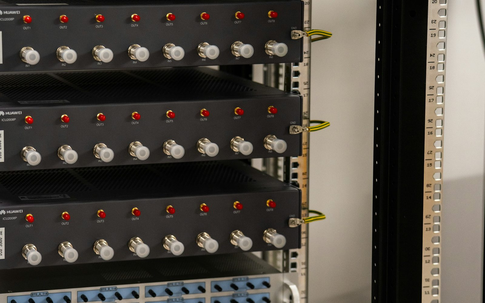
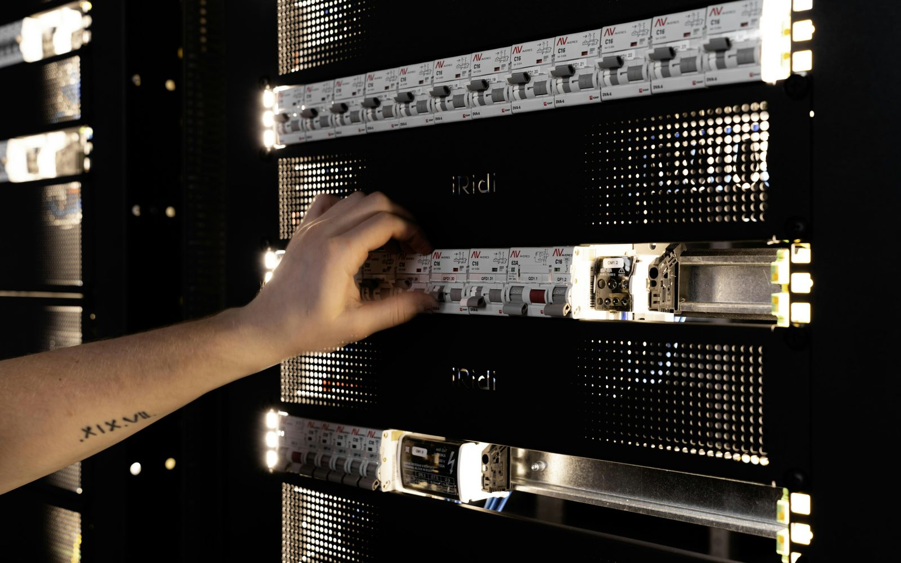

IN PLAIN ENGLISH
Security & Vulnerability Teams
Security work depends on knowing what exists. Some devices do not run agents. Some sit out-of-band. Some are present in the rack but missing from the expected inventory. RackTrack turns the physical rack into a coverage check.

You cannot protect equipment you cannot see.
A vulnerability is announced, but the team is not sure every affected switch, appliance, PDU, or out-of-band device is represented in the security tools.
RackTrack captures the real cabinet.
RackTrack captures physical devices and compares what is visible with the records that security teams depend on.
The team gets a record it can use.
The team can review unmanaged or missing assets and prioritize work from a more complete view of the environment.
WHAT THE TEAM SEES
Clear rack evidence, not another mystery report.
- A physical list of equipment in scope.
- A way to expose assets missing from coverage.
- Evidence to start a security review without waiting for manual discovery.
DECISIONS MADE EASIER
Critical CVE response with fewer blind spots.
Start with one row and reveal which physical devices are not represented where they should be.

START SMALL